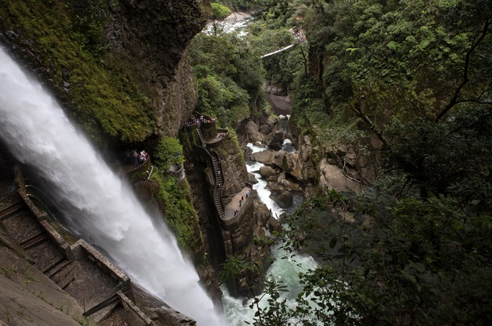
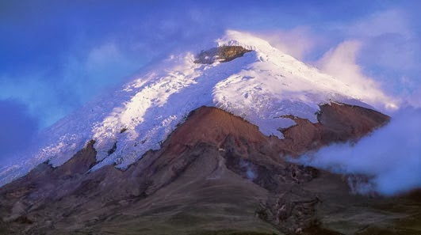
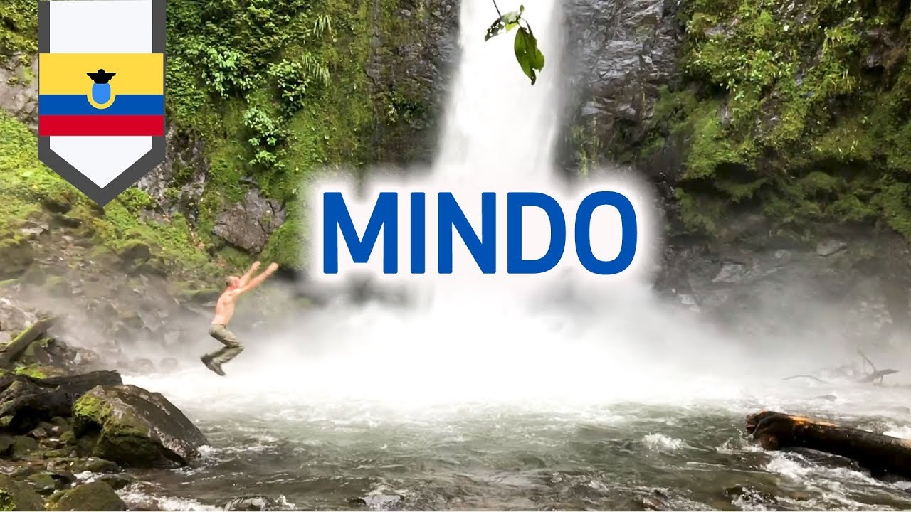

¿Por qué usar la app?
Viajes a pedido
Opciones económicas
Una manera fácil de viajar
Ofertas vacionales
Baños de Agua Santa
Enclavado al pie del volcán Tungurahua, uno de los más activos de Ecuador, y en el margen de la jungla, Banos es un destino turístico cada vez más popular para relajarse en las piscinas de aguas minerales termales o descargar adrenalina con deportes de aventura. Las piscinas termales de origen volcánico de más fácil acceso son las Piscinas de la Virgen. El pueblo también cuenta con una famosa basílica, dedicada a la Virgen del Agua Bendita.
Volcán Cotopaxi
El Cotopaxi tiene una elevación de 5.897msnm es el segundo de más altura del país (siendo precedido por el Chimborazo) y uno de los volcanes activos más altos del mundo. Está situado 50 km al sur de Quito. El Cotopaxi es uno de los más bellos volcanes nevados de Los Andes. En sus alrededores se encuentran caminos y espacios para disfrutar a plenitud de la serranía ecuatoriana.
Mindo
El bosque protector Mindo-Nambillo es un paraíso para los observadores de aves, pues, gracias a su variación altitudinal, este lugar privilegiado cuenta con numerosos ecosistemas. Mindo es un lugar perfecto para relajarse, caminar y observar aves.